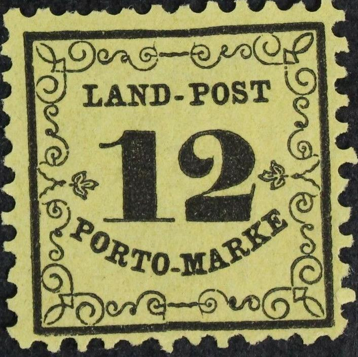
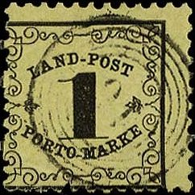
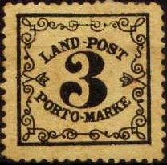
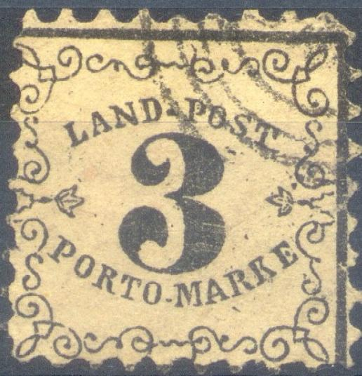
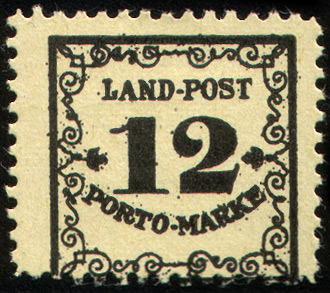
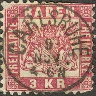
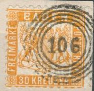

{kind=link}

{kind=link}

Return To Catalogue - Baden - Other German States - Germany
Note: on my website many of the
pictures can not be seen! They are of course present in the
catalogue;
contact me if you want to purchase it.
1 (k) black on yellow 3 (k) black on yellow 12 (k) black on yellow
Specialists still distinguish between thin and thick paper concerning the 1 k and 3 k values. The remainders of these 3 stamps were sold to the stamp dealer Julius Goldner in 1873; 322,800 of the 1 k, 455,500 of the 3 k and 160,000 of the 12 k values (source: The Stamps of the German Empire by Bertram W.H.Poole) for 1000 Mark (see also the "Handbuch für Postmarkensammler für den permanenten Gebrauch Bestimmt (1881)" by Ferdinand Meyer).
Value of the stamps |
|||
vc = very common c = common * = not so common ** = uncommon |
*** = very uncommon R = rare RR = very rare RRR = extremely rare |
||
| Value | Unused | Used | Remarks |
| 1 k | * | R | Number of stamps issued 650,000. |
| 3 k | * | *** | Number of stamps issued 1,000,000. |
| 12 k | ** | RRR | Number of stamps issued 350,000. |
Genuine stamps are almost always badly centered. The perforation usually cuts into one of the framelines of the stamp.
Most of the 12 Kr stamps with cancel are forged. Only about 700 stamps were used with cancels: Baden, Birkendorf, Bonndorf, Freiburg-Stadtpost, Markdorf, Merchingen, Mosbach, Saekingen, Steinen, Thingen and Waldshut (according to 'Distinghuishing Characteristics of Classic Stamps, Old German States' by Herman Schloss). All other cancels are probably forged. The next stamp is an example of such a forgery, "CARSRUHE STADT POST 5 MAY 6-8", (note the spelling of "CARSRUHE", without "L", it should have been "CARLSRUHE"):
(Forged cancel on a genuine stamp)
Another forged cancel on a 12 k stamp
Other forged cancels were made by Rudolph Thomas from Chicago (see
'Philatelic Forgers, their Lives and Works' by V.E.Tyler,
probably to 'enhance' some 30 k stamps), the following cancels
(with fixed dates) are known:
"OBERKIRCH 10 JUL"
"GRIESSEN 7 OCT"
"STOCKACH 7 OCT"
These cancels were used somewhere between 1912-1941 (Thomas died
in 1941). If anybody has a picture of these forged cancels, or
more information, please contact me!
The forger Emil Reinhard Krippner (Freiberg, Sachsen, Germany) is known to have forged a two ring "VOEHRENBACH 3 SEP" cancel, as well as a forged "STAUFEN" cancel and the following 5-ring numeral cancels: 24, 27, 28, 43, 57, 79, 104, 109, 150 and 151 (source: "Emil Reinhard Krippner und seind Falsifikate" by Hans Friebe, 68 pages).
Forgeries, note the strange cancels:
(Reduced sizes)
Note the downwards pointing left hand top side of the
"1"s.
Forgeries exist, for all values the "-" between "PORTO" and "MARKE" should be quite low. The letters "PO" of "PORTO" are written at a higher level than the other letters of this word. Also note that the 4 spirals at the left and right have a small vertical line in it. Also compare the ornamental design carefully with a genuine stamp above.
Other examples of forgeries:

Three forgeries made by the same forger:
Three forgeries made by the same forger

Forgeries with the perforation too coarse. Also the space between
the "K" and "E" of "MARKE" is too
large.
Fournier also offers forgeries of these stamps in his 1914 pricelist (3 values for 1 Swiss Franc) as second choice forgeries. There are no examples in 'The Fournier Album of Philatelic Forgeries'), but I assume this forgery is a Fournier forgery:
The ornaments are different from the genuine stamp in this 12 k
forgery, it has a "KEHL 2 NOV 6-7N" cancel as found in
the Fournier album. Also the "P" of "PORTO"
is more slanting etc. I have also seen this particular forgery
with a "HEIDELBERG 15 JUL(?) 10 12 V" cancel (I haven't
seen this cancel in the Fournier Album).
In the Fournier album of philatelic forgeries,
the following cancels are given:
"79" in 5 concentric circles,
"60" in 5 concentric circles,
"8" in 5 concentric circles,
"31" in 3 concentric circles,
3 concentric circles and a dot in the middle,
an "8" in a small circle,
three circular cancels with "KEHL 2 NOV 6-7 N",
"RASTATT 14 OCT 5-10 V" and "FURSTENBERG 17 2
MBG".
The above 12 k stamp has the Kehl cancel, therefore I presume it
is a Fournier forgery. I have also seen a 1 k stamp with the same
cancel and a 3 k Fournier forgery with the Furstenberg cancel.
Note, that the curl of the "2" points towards the upper
left, though in the genuine stamps, it points to the upper right
corner. I have also seen this forgery with a (unreadable) red
town cancel.
The Fournier forged cancels as they can be found in 'The Fournier
Album of Philatelic Forgeries'. Another cancel "KARLSRUHE 2
Mrz" and date in two straight lines can also be found in
this album (no image available yet). These forged cancels were
according to the Serrane Guide also used on genuine postage due
stamps, genuine stamps and forged postal stationary.
Another primitive forgery of the 12 k value.
The forger Peter Winter has made forgeries of the 12 k value (no doubt to paste them on forged letters), they were made somewhere in the 1980's and have a rather modern appearance:

A 12 k 'LAND-POST' forgery made by Peter Winter
The next stamps with inscription "FREI DURCH ABLOSUNG Nr. 16" were used in Baden, more information can be found at Germany official stamps:
2 p grey 3 p brown 5 p green 10 p red 20 p blue 25 p orange and black on yellow
3 kr (Drei Kreuzer) blue 6 kr (Sechs Kreuzer) yellow 9 kr (Neun Kreuzer) red 12 kr (Zwolf Kreuzer) brown 18 kr (Achtzehn Kreuzer) orange
Forgeries should exists of the 6 kr yellow and 18 kr orange (see Serrane Guide); also with forged Fournier cancels.
Also, in 'The Stamp Collector's Magazine, Vol. V 1867, page
179, the following description of a forged envelope is given:
BADEN Envelope, 3 kr., blue.
The genuine stamp has the engine-turned border very clear and
distinct, the centre being formed by a chain, the loops of which
can easily be counted. In the forgery this is very indistinct,
especially on the right side, and the separate loops cannot be
distinguished. The inner white circle which surrounds the
medallion is of equal thickness in the genuine ; but thicker in
the counterfeit, especially between the letters I and K.
In the book 'How to detect forged stamps' by Thomas Dalston
(1865) the following text can be found:
ENVELOPE, 3 kr. blue
In the forgery the head is badly embossed, and the parting of the
hair is invisible; it is also printed on thicker paper than the
genuine. Altogether it is well printed, but the engraving has
been badly done. The inscription across the envelope, in the
forgery, is printed in roughly formed letters, tho colour being
lemon instead of orange. The imitation appears to be
lithographed, but the genuine is die printed.
3 kr (Drei Kreuzer) red 6 kr (Sechs Kreuzer) blue 9 kr (Neun Kreuzer) brown
Forgeries should exists of the 6 kr blue (see Serrane Guide) ; also with forged Fournier cancels.
I have seen the values: 5 p red and black, 25 p green and black, 30 p green and black (2 types, '30' different), 40 p red and black, 50 p lilac and black, 60 p blue and black, 70 p brown and black, 80 p orange and black, 90 p brown and black, 1 M grey and black and 2 M blue and black.
I have also seen stamps with the "Grobh." overprinted with a bar:
nietweergeven.jpggstat/badrail2.jpg"
width="133" height="158">
(Reduced size)
I have seen the values 5 p red and black, 10 p brown and black, 20 p orange and black, 50 p lilac and black, 60 p blue and black, 70 p brown and black, 80 p orange and black, 90 p brown and black, 1 M grey and black, 3 M brown and black, 4 M green and black, 5 M red and black and 20 M green and black with this overprint .
These railway stamps are not very common.
Reduced sizes
I've seen the values: 5 p brown, 10 p black, 25 p blue, 30 p green and 50 p red. And with value in "CENTIMES" (for use in the Badischer Bahnhof in Basel, Switzerland): 5 c green, 10 c green, 30 c green, 65 c green, 1 Frank green, 5 Franken green. They should also exist with the inscription "REICHSEISENBAHNEN" and value in "RAPPEN" when the Baden Railways were taken over by the German Reichsbahn (at least the 80 Rappen green).
Inscription "BADISCHE STAATSEISENBAHNEN WERTMARKE":
I have seen the values 10 p and 20 p (both in red with black value inscription).
For more Germany railway stamps, click here.
10 p yellow 20 p brown 50 p blue 1 M green 2 M red
(Reduced sizes)
These fiscal stamps are not very common. I have seen the following values (with the value always in black): 5 p brown, 50 p violet, 70 p yellow, 1 M lilac, 2 M grey, 3 M orange, 4 M red, 5 M blue, 10 M green, 30 M blue and 50 M yellow.
I have seen the values (the value always in black): 10 M green, 50 M yellow, 100 M olive, 1000 M brown, 2000 M grey, 5000 M green, and 50000 M red.
Typical cancels:
Pre-philatelic cancel 'FREIBURG in BADEN' with crown and posthorn
in circle.
(Number cancels or 'Nummerstempel')
The most common cancel is 5 ring cancel with a
number in the center. I've seen them in black and red. For
example nr 109 for the town of Pforzheim. Other numeral cancels:
1: Aach
2: Achern
3: Adelsheim
4: Aglasterhausen
5: Allensbach
6: Altbreisach
7: Appenweiler
8: Baden (Adelsheim?)
9: Berolzheim
10: Beuggen (closed on 1st February 1856 and was given to
Rheinfelden)
11: Biberach
12: Bischofsheim a./R.
13: Bischofsheim a./T.
14: Blumberg
15: Blumenfeld
16: Bonndorf(?)
17: Boxberg
18: Bretten
19: Bruchsal
20: Buchen
21: Bühl
22: Burg
23: Burkheim
24: Carlsruhe
25: Constanz
26: Dinglingen
27: Donaueschingen(?)
28: Durlach (I've seen this cancel in red)
29: Durmersheim (closed 1st May 1859)
30: Dürrheim
31: Eberbach
32: Efringen
33: Eichesheim
34: Eigeltingen
35: Elzach
36: Emmendingen
37: Endingen
38: Engen
39: Eppingen
40: Ernstthal
41: Ettenheim
42: Ettlingen
43: Freiburg
44: Freudenberg
45: Furtwangen
46: Gaggenau
47: Geisingen
48: Gengensbach
49: Garlachsheim
50: Gernsbach
51: Graben (closed 1st May 1859)
52: Griesbach
53: Haltingen
54: Hardheim
55: Haslach
56: Hausach
57: Heidelberg
58: Heiligenberg
59: Heitersheim
60: Hilzingen
61: Höllsteig
62: Hornberg
63: Hüflingen
64: Hundheim (closed on 1st May 1859 and was given to Hemsbach)
65: Ichenheim (closed 1st May 1859)
66: Jestetten
67: Kandern
68: Kehl
69: Kenzingen
70: Kippenheim
71: Kleinlaufenburg
72: Kork
73: Krautheim
74: Krotzingen
75: Königsschaffhausen
76: Königshofen
77: Külsheim (Meckesheim?) (closed 1st May 1859)
78: Ladenburg
79: Lahr
80: Langenbrücken
81: Langen - Denzlingen
82: Lenzkirch
83: Löffingen
84: Lörrach
85: Ludwigshafen
86: Malsch
87: Mannheim
88: Markdorf
89: Meersburg
90: Merchingen
91: Möhringen
92: Möskirch
93: Mosbach
94: Mühlberg(?)
95: Müllheim
96: Muggensturm
97: Munzingen
98: Neckarbischofsheim
100: Neustadt
101: Oberkirch
102: Oberlauchringen
103: Oberschefflenz
104: Offenburg
105: Oppenau
106: Orschweier
107: Osterburken
108: Petersthal
109: Pforzheim
110: Pfullendorf
111: Philippsburg
112: Radolfzell
113: Randegg (closed on 15th June 1863 and was given to the post
office of Gailingen)
114: Rappenau
115: Rastatt (I've seen this cancel in red)
116: Renchen
117: Riedern (was closed and the canceller was given to the post
office of Gottmadingen)
118: Riegel
119: Rippoldsau
120: Rothenfels
121: Säckingen
122: Salem
123: St.Blasien
124: St.Georgien
125: Schallstadt
126: Schapbach (closed 1st May 1859)
127: Schiltach
128: Schliengen
129: Schönau
130: Schopfheim
131: Schwetzingen
132: Singen
133: Sinsheim
134: Stadel (closed 1st May 1853 and was given to Bremet, which
opened February 1856)
135: Staufen
136: Steinen
137: Steisslingen (closed 1st May 1859)
138: Stetten
139: Stockach
140: Stollhofen (closed 1st January 1854 and was given to
Lichtenau)
141: Stühlingen
142: Sulzburg
143: Todtnau
144: Thiengen
145: Triberg
146: Ueberlingen
147: Uehlingen
148: Villingen
149: Vöhrenbach
150: Waghäusel
151: Waibstadt
152: Waldkirch
153: Waldshut
154: Walldürn
155: Weingarten
156: Weinheim
157: Wertheim
158: Wiesenbach (closed 1st May 1859)
159: Wiesloch
160: Wilferdingen
161: Wolfach
162: Zell a./H.
163: Zell-Wiesen
164: Travelling Railroad post office (from 5th May 1852 onwards)
165: Rittersbach (opened 1st July 1853; closed 1st May 1859)
166: Gondelsheim (opened 1st July 1854)
167: Heidelsheim (opened 15th August 1854)
168: Dertingen (opened 1st February 1855; closed 1st May 1859)
169: Werback (opened 1st February 1855)
170: Basel Badische Bahnhof (Baden post office in Basel,
Swizerland, from 8th March 1855 onwards)
171: Badenweiler (opened 15th July 1855)
172: Weiterdingen (opened 1st September 1855; closed 1st May
1859)
173: Steinbach (opened 15th September 1855)
174: Mannheim Bahnhof (railway station; from 11th March 1856
onwards)
175: Baden Bahnhof (railway station; from 11th March 1856
onwards)
176: Brombach (opened 1st June 1856)
177: Karlsruhe (not know when this postoffice opened)
Other cancels:
Railway cancel '164' (Eisenbahnstempel)
City cancel, here "CONSTANZ", "KEHL" and
"NECKARELZ"

Numeral cancel in 5 circles, 5th one with rimples, here nr 24,
reduced size; so-called 'Zackenstempel'. I've also seen nr. 177
surrounded by one normal circle and the outer one with rimples as
above.
So-called 'Uhrradstempel' with nr '20' and nr '4'; I've seen the
numbers '1', '2', '4', '5', '6', '7', '8', '9', '10', '11', '13'
and '20'.
Box-cancel or 'Kastenstempel' "ETTLINGEN 10 Jun." and
"CARLSRUHE 14 OKT."
Elliptic cancel "PFORZHEIM POSTABLAGE ...." and
"HEIDELBERG POSTABLAGE SCHLIERBACH".
Railway cancel ' GR. BAD. BAHNPOST'; I've also seen a similar
railway cancel with inscription 'BAHNPOST BASEL-CONSTANZ'.
(Basel, Switzerland, Badische Bahnhof cancel)
Forged cancel:

In 1945 stamps were issued in the French occupation zone of Germany, special stamps with inscription 'BADEN' were issued, example:
Two Germania stamps of Germany, overprinted 'Rep. Baden', both
cancelled in Karlsruhe
http://home.earthlink.net/~adeptmoron/BadenA.html very nice explanation of the Baden stamps.
{kind=link}
{kind=link}
{kind=link}
{kind=link}
{kind=link}